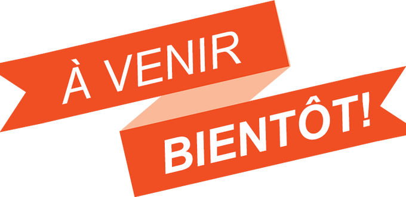
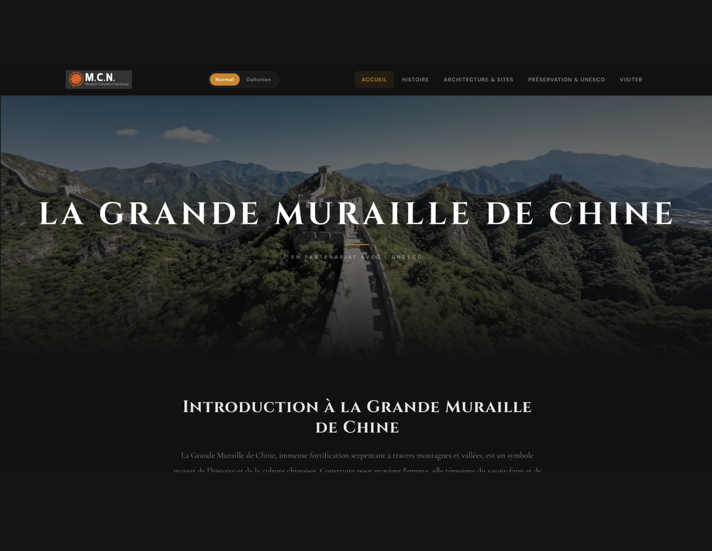
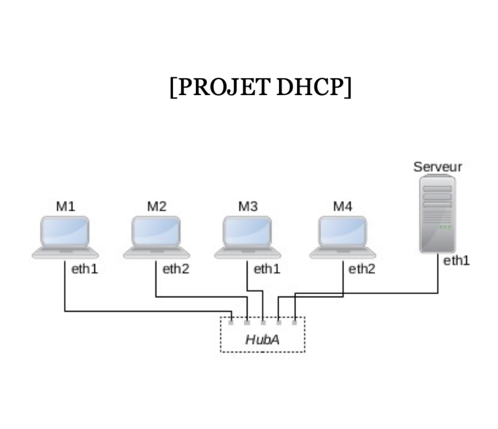
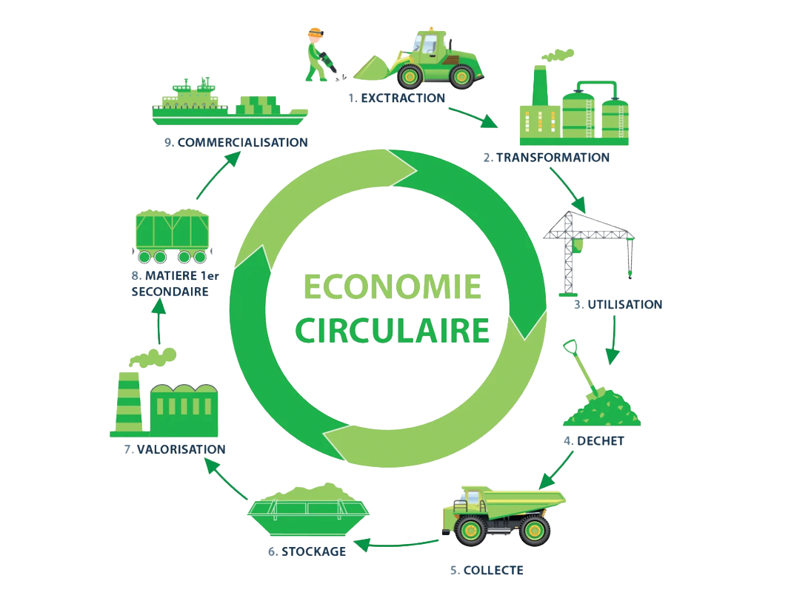
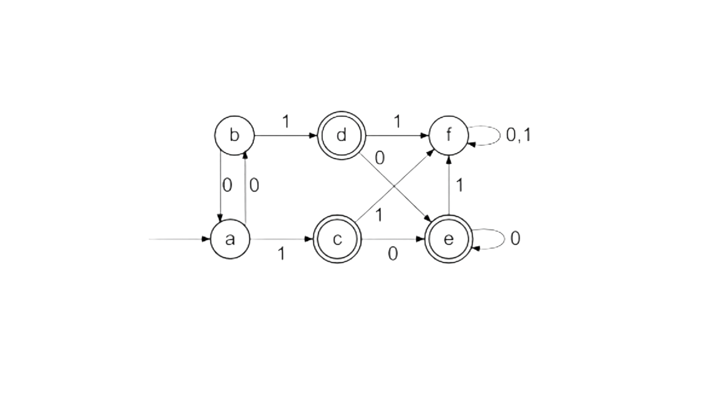
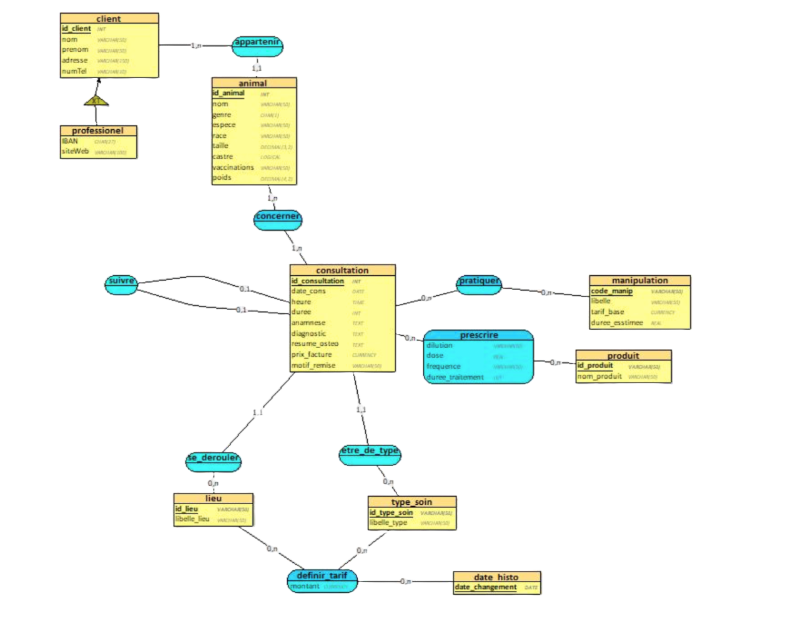

2025 — 2026
BUT Informatique — 1ère année
Renforcement des fondamentaux : algorithmique, programmation, bases de données, conception, méthodes.
Étudiant — BUT Informatique
Je construis des interfaces web propres, accessibles et performantes. Je cherche à renforcer mon expérience sur des projets concrets (web, logiciel, data ou cyber).
Un aperçu rapide et lisible de mon évolution (format recruteur).
2025 — 2026
Renforcement des fondamentaux : algorithmique, programmation, bases de données, conception, méthodes.
2023 - 2025
Tutorat renforcé en partenariat avec l'École polytechnique - axé autour des sciences, de la méthodologie et de l'ouverture culturelle - Travail en groupe sur un projet scientifique autour d'un accélérateur de particules.
Un profil polyvalent : développement, bases techniques et bonnes pratiques.
Projets universitaires — deux niveaux de lecture : résumé rapide et détails techniques au clic.

Développement d'un RPG collaboratif en Java. Simulation de gestion de village avec mécanique de ressources, événements aléatoires et gestion de crises.
Implémentation du pattern MVC pour séparer la logique métier de l'affichage console. Création d'un système de gestion de 7 ressources (0 à 10) et de personnages avec capacités uniques (Grand Schtroumpf, Bricoleur…).
Java 25 (Records, Interfaces, Enums), POO avancée, gestion d'événements. Architecture conçue pour l'intégration future d'une interface JavaFX sans modifier le moteur de jeu.
Transformation d'une base de données statique en une application web complète pour la gestion d'un cabinet vétérinaire.
Migration d'une base MySQL vers PostgreSQL via un script Python. Développement d'une interface PHP/JS permettant la gestion des dossiers médicaux et des tarifs.
Système d'authentification à 3 rôles (Admin / Gestionnaire / Client) et sécurisation des données via transactions PostgreSQL (Commit / Rollback).

Jeu de réflexion inspiré de "Baba Is You" où le joueur manipule l'architecture d'un donjon pour guider un aventurier autonome via une IA BFS.
Conception du moteur de jeu (grille, rotations de salles), implémentation d'un algorithme BFS de recherche de chemin pour l'IA de l'aventurier.
Interface graphique avec la bibliothèque fltk, système de sauvegarde/chargement, éditeur de niveaux intégré et parsing de fichiers texte.

Pilotage d'une équipe de 4 pour la réalisation d'un site web immersif et responsive en partenariat avec l'UNESCO.
Chef de projet et développeur Front-end. Conception de la maquette UX/UI et coordination de l'équipe de 4 personnes.
Vue 3D, carte et frise chronologique interactives, design totalement responsive mobile-first.

Conception et analyse d'une infrastructure réseau sous Linux pour automatiser l'attribution d'adresses IP.
Simulation d'un réseau (1 serveur, 4 clients) via NetKit-ng. Installation et configuration du démon isc-dhcp-server sur le réseau 192.168.1.0/24.
Capture et analyse de trames avec Wireshark et tcpdump — messages Discover, Offer, Request, Ack du protocole DHCP.

Étude stratégique, économique et écologique d'un secteur du numérique (IA, Cloud, Green IT).
Chef de projet (planning, interface enseignant) et Responsable technique (montage vidéo HD sous-titrée).
Benchmark concurrentiel, analyse SWOT et évaluation de l'empreinte carbone technologique du secteur étudié.

Développement d'une bibliothèque Python complète pour la manipulation d'automates finis et le traitement de langages formels.
Implémentation de fonctions de manipulation de langages (préfixes, suffixes, facteurs, miroirs). Conception d'un moteur capable de simuler la lecture de mots et de vérifier leur acceptation par un automate.
Développement d'algorithmes de déterminisation, de complétion et calcul de l'automate produit (intersection/différence). Optimisation via l'algorithme de minimisation de Moore.

Conception et implémentation d'un SI complet pour un cabinet vétérinaire (consultations, ostéopathie, homéopathie) — de l'analyse des besoins jusqu'au déploiement SQL.
Remplacer une gestion manuelle par une base de données fiable, capable de suivre l'historique des patients et d'automatiser la gestion des tarifs selon différents critères.
Analyse des besoins du cabinet, création du MCD et MLD. Règles de gestion : distinction clients particuliers / professionnels, évolution des tarifs dans le temps.
Création des tables, clés étrangères et contraintes d'intégrité. Données de test cohérentes. Requêtes d'analyse de l'activité et de suivi des dossiers médicaux.
Consultez ou télécharger mon CV ci-joint :
Pour une opportunité ou simplement échanger.
Disponible pour